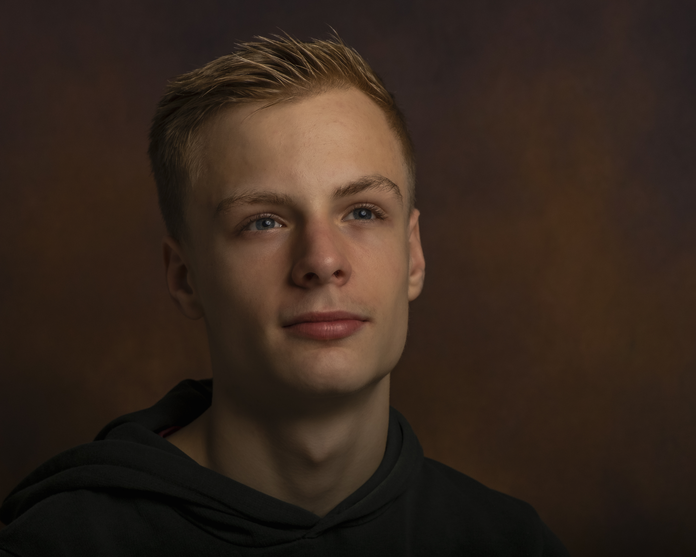
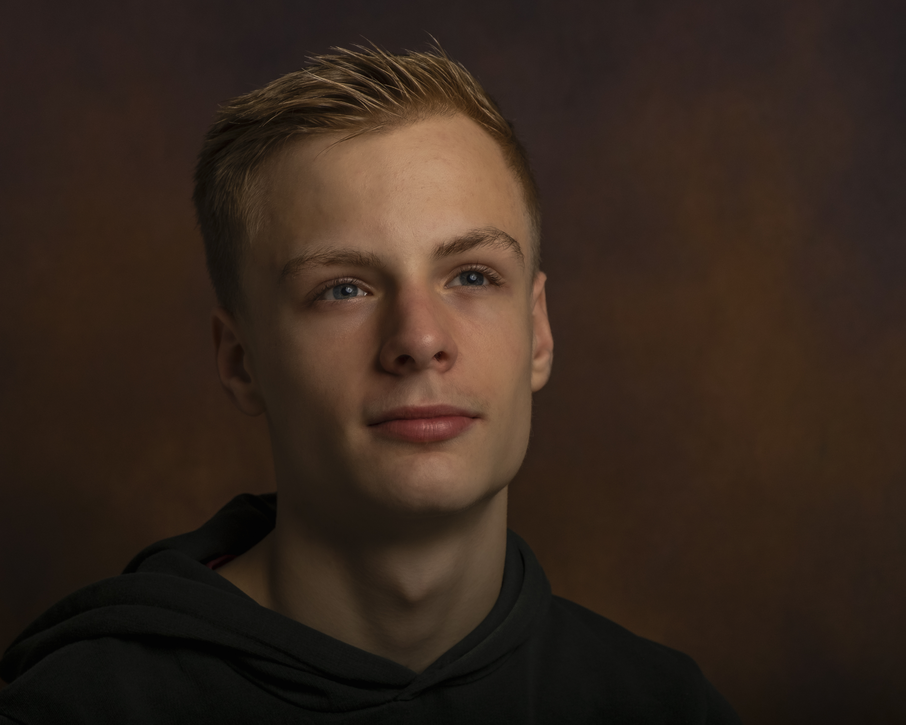

Startpagina
Wie ben ik
Hallo mijn naam is Sven en ik ben een leerling van het Harens Lyceum. Ik heb een enorme passie voor Programmeren en Computers, vandaar dat ik deze website heb gemaakt. Ik leef met mijn vader, moeder en mijn broertje in Yde. Ik heb een konijn genaamt Flappie en een kat genaamd Tommy. Ik ben nu 15 jaar.
Mijn vakantie
Deze zomervakantie ben ik naar Spanje geweest, naar de stad Valencia. Ik heb daar veel bezocht, zoals de Centrale Markthal, het Stadhuis, het strand en de winkelstraat Carrer de Colón. Het weer was heerlijk, met elke dag temperaturen van ongeveer 30 graden.
Hobbies
Mijn passie voor computers komt voort uit het feit dat ik mijn eigen computer heb gebouwd. We hebben thuis een server waarop Home Assistant draait, en in mijn vrije tijd vind ik het leuk om hiermee te experimenteren. Voorheen zat ik op volleybal, maar ik doe nu geen sport meer omdat er niet genoeg mensen waren om een toernooi te spelen.
PC bouwen
Ik vind het leuk om computers te bouwen en te ontwerpen. Zo heb ik ook mijn eigen computer gebouwd. In mijn vrije tijd werk ik graag aan mijn computer.

 
